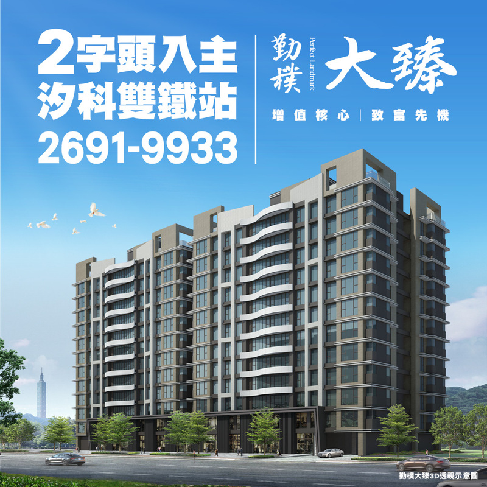
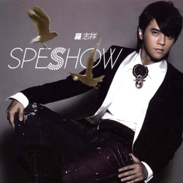

Seeking a position as a manager or consultant of real estate investment department.
EDUCATION:
THE LIVERPOOL INSTITUTE OF PERFORMING ART (UK) MUSIC COLLEGE
Diploma of Pop Music & Sound Technology
WORK EXPERIENCE:
HI-YES GROUP PROJECT ASSOCIATE MANAGER 2013-PRESENT
Used my project managing skills to lead project team to achieve the goal of the project
Delivered the knowledge to assist customers in their real-estate investment
Coordinated with construction company to fulfil theirs needs
Utilized cost-benefit , feasibility analysis and research skills to collect information from the market to define the goal of the project
Supported co-workers to present new project on Keynote

WORK
AVEX TAIWAN INC PRODUCER 2006-2010
Directed the production team to develop the music album
Balanced the budget during album or concert processing
Collected demos and make sure they fits the company strategic
Make sure the musicians and artist comfortable during the concert trip
Attend promotional activities to monitor the activities process

WORK
PROMISE PRODUCTION STUDIO MANAGER, ENGINEER 2002-2004
Maintained the recording studio
Use my skills to help producers to record and mix the songs
Developed ideas and concepts of the albums directions for artists
VOLUNTEER EXPERIENCE:
TYPHOON MORAKOT CAUSED FLOOD VOLUNTEER AUGUST 2009
Drove my car with goods to Kaohsiung to help people clean and rebuild their houses •Went to Taitung to donate foods and water and carry the people with disabilities to the hospital

.jpg "Can't be more good looking")